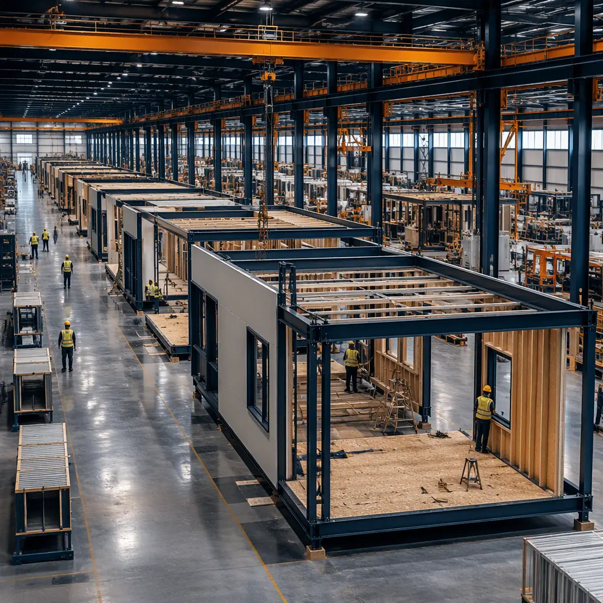
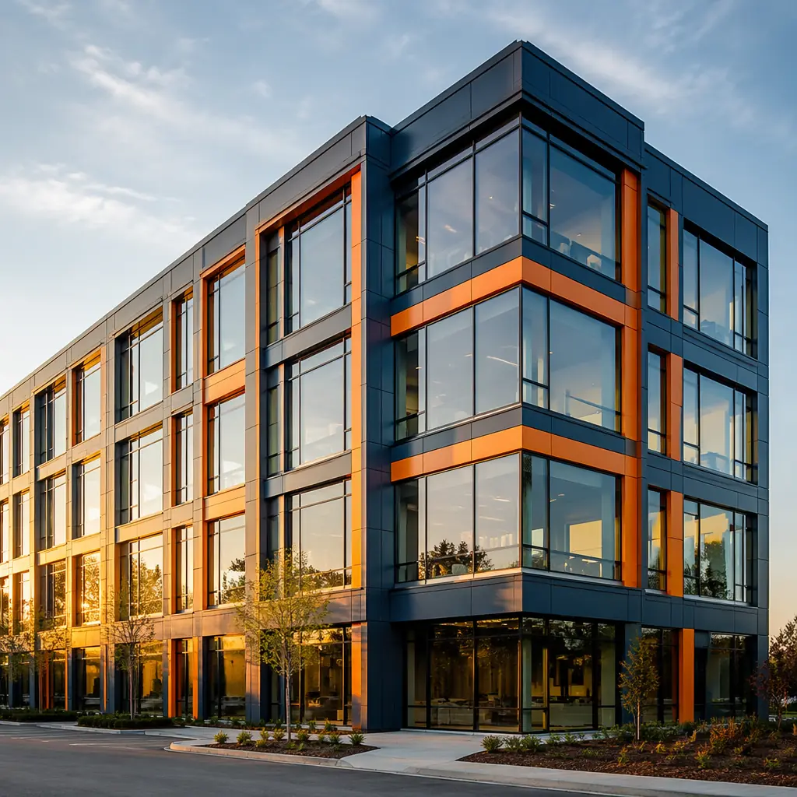
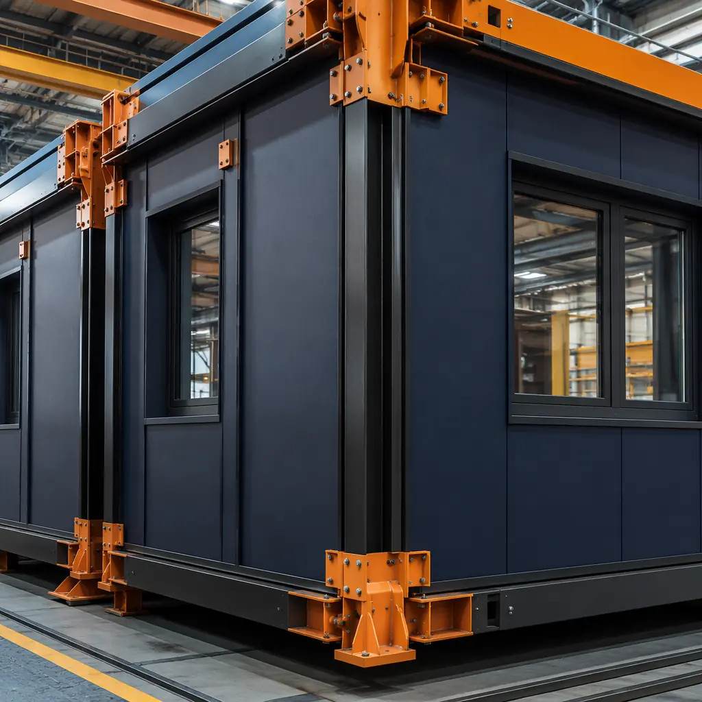
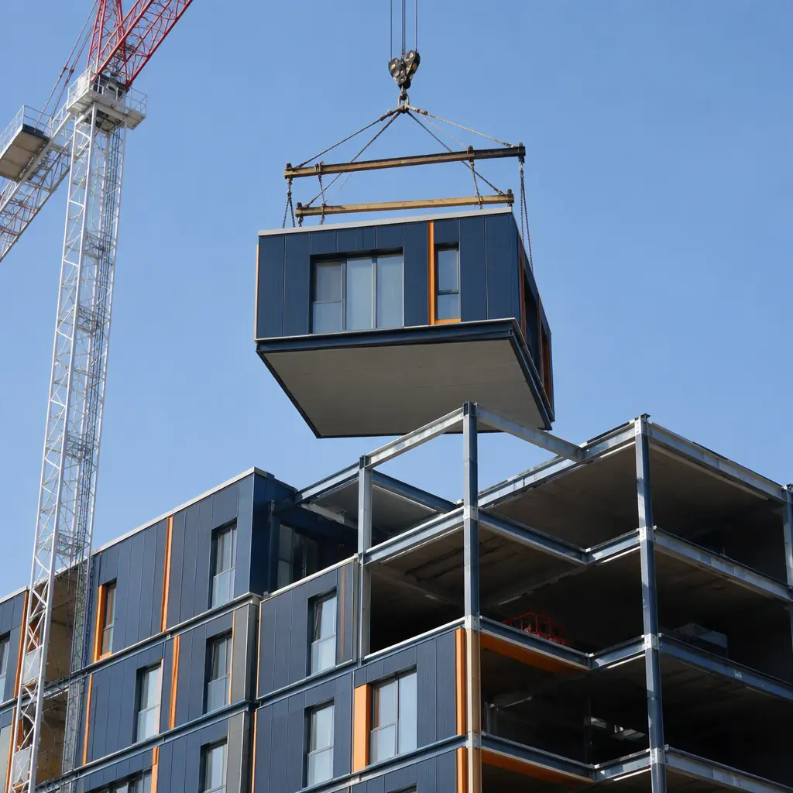
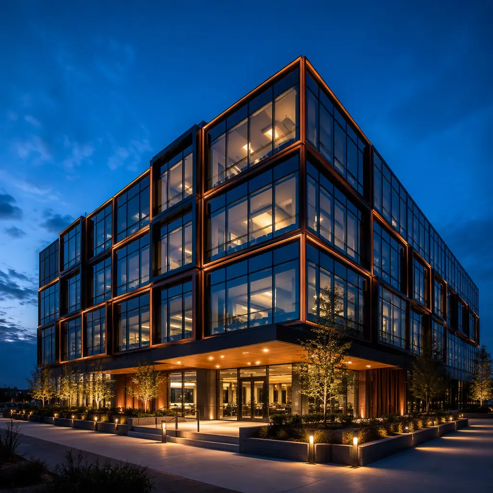

Securing financing is the single most consequential step in any modular construction project — and the one where developers lose the most time to lender education. A lender who understands modular construction will offer terms that reflect the method's true risk profile: shorter construction periods, higher budget certainty, and faster revenue generation. A lender who does not will price your project like a conventional build at best, or decline it outright at worst. This guide covers every commercial lending avenue available to modular developers — construction loans, SBA programs, commercial mortgages, and specialty financing — with the data you need to get approved on the best possible terms.

The Modular Lending Landscape: What Developers Need to Know
The first question developers ask is whether modular construction qualifies for the same loan products as traditional construction. The answer is yes — but the terms you receive depend almost entirely on lender education. Modular construction has been financed through every major commercial lending channel for over two decades: construction-to-permanent loans, SBA 504 and 7(a) programs, CMBS conduit loans, bridge financing, and institutional commercial mortgages. The challenge is not eligibility; it is that most loan officers have never underwritten a modular project, and their default posture is caution.
Here is what changes when a lender understands the numbers. Across 500+ MODURA projects in 18 countries, modular construction delivers:
- 92% budget accuracy — 92% of projects completed within 5% of the original budget, compared to 15–20% average change orders in traditional construction. For a lender, this is the difference between a performing loan and a distressed one. A $20 million project that finishes $3 million over budget puts the entire debt service at risk.
- 40–50% shorter construction timeline — 9–12 months versus 18–24 months for traditional builds. Half the construction period means half the exposure to interest rate volatility, labor shortages, and market downturns.
- Visible collateral — 80% of the building's value exists as completed, QC-inspected modules before they reach the site. A lender can walk the factory floor and see exactly what their money bought — something impossible with a foundation and a framing crew.
- Accelerated revenue — A hotel that opens 10 months earlier generates 10 months of additional revenue before the first loan payment is due. This directly improves the debt-service coverage ratio (DSCR) from the very first quarter of operation.

The data is unambiguous: a factory-built building with 92% budget certainty is a lower-risk lending asset than a site-built building with 15–20% cost overrun probability. The obstacle is not construction quality or financial viability — it is that most commercial lenders have never seen the numbers presented in underwriting terms they recognize.
Construction Loan Products for Modular Projects
Modular construction projects can access the full spectrum of commercial construction lending products. The key to securing favorable terms is presenting your project in a format that maps to standard underwriting frameworks while highlighting the structural advantages of modular. Here is how each major product works for modular, and what you need to bring to the table.
Construction-to-Permanent Loans (C-to-P)
The most common financing structure for modular development. A C-to-P loan provides interest-only financing during the construction phase, then converts to a permanent mortgage upon completion and stabilization. For modular projects, the construction phase is compressed to 9–12 months versus 18–24 for traditional builds — a difference that produces substantial interest savings.
On a $15 million project at 7.5% construction financing, the interest-only period costs approximately $94,000 per month. Shortening construction from 20 months to 10 months saves $940,000 in interest before the building opens. This number — not speed for its own sake — is the argument that gets loan committees to approve modular terms. Present it as a line item in your pro forma, and any experienced underwriter will recognize the advantage immediately. For a deeper analysis of modular's financial performance across the full project lifecycle, see our modular construction ROI guide for developers.
Modular-Specific Draw Schedules
This is where modular financing diverges most sharply from traditional construction lending — and where developer preparation makes the biggest difference in loan terms. Traditional construction draws follow site progress milestones: foundation complete, framing complete, rough-in complete, and so on. Modular requires a front-loaded draw schedule because 30–50% of the contract value is paid before modules leave the factory.
| Draw Phase | % of Loan | Timing | Trigger |
|---|---|---|---|
| Site preparation & foundation | 10–15% | Month 1–2 | Foundation inspection |
| Factory production deposit | 25–35% | Month 2 | Factory contract + materials procurement verification |
| Factory production completion | 20–25% | Month 4–6 | Third-party factory inspection report |
| Module delivery & installation | 15–20% | Month 7–8 | Delivery manifests + site installation progress |
| Site finishing & occupancy | 10–15% | Month 9–12 | Certificate of occupancy |
Lenders unfamiliar with modular may resist the front-loaded structure because it concentrates disbursement early in the loan lifecycle. The counterargument is straightforward: the concentration reflects production, not risk. When 25–35% of the loan is drawn for factory production, the lender receives a corresponding 25–35% of the building's value in completed, inspected modules that can be independently verified. This is more collateral visibility than a traditional lender gets at any point during site construction. Frame it this way, and most commercial lenders will approve the schedule. For guidance on project cost breakdowns that support your loan application, refer to our modular construction cost analysis.

SBA 504 and 7(a) Loans for Modular Construction
Small Business Administration loan programs cover modular construction under the same eligibility criteria as conventional construction — and in some cases offer more favorable terms because the SBA's underwriting framework already accounts for the risk mitigants that modular provides. For US-based developers building owner-occupied commercial properties, these programs are frequently the best financing option available.
SBA 504 Program: Designed for owner-occupied commercial real estate, the 504 program provides fixed-rate, long-term financing with a three-part structure: 50% from a Certified Development Company (CDC) at below-market fixed rates, 40% from a conventional lender in first-lien position, and 10% from the borrower. Key advantages for modular developers:
- 90% loan-to-cost (LTC). Only 10% equity required, compared to 25–35% for conventional construction loans. This preserves developer capital for the next project.
- 25-year fixed rate on the CDC portion. Eliminates interest rate risk on half the capital stack for the full loan term.
- Below-market rates. CDC portion is typically priced at 50–100 basis points below comparable commercial mortgages.
- Eligibility: The developer must occupy at least 51% of the building. This makes the 504 program ideal for developers building their own modular office buildings, manufacturing facilities, or mixed-use projects with significant owner-occupied space.
SBA 7(a) Program: More flexible than the 504, the 7(a) program can finance construction, equipment, and working capital in a single loan. Loan amounts up to $5 million with SBA guarantees covering 75–85% of the exposure, reducing the lender's risk and often translating into more favorable terms for the borrower. The 7(a) is well-suited for smaller modular projects — modular retail buildouts, medical office conversions, or workforce housing developments under $5 million in total project cost.
Commercial Mortgage-Backed Securities (CMBS) and Conduit Loans
For larger modular projects — $15 million and above — conduit loans offer non-recourse, fixed-rate financing through the commercial mortgage-backed securities market. CMBS lenders evaluate projects based on cash flow metrics (DSCR, debt yield) rather than construction methodology, which means modular projects compete on equal footing once the building is operational. The key considerations for modular developers pursuing CMBS financing:
- Stabilization requirement. CMBS loans require the property to be stabilized (typically 90% occupancy for 90 days) before closing. This means you will need bridge or construction financing to cover the construction period, then refinance into a CMBS loan post-stabilization. The compressed timeline of modular construction makes this bridge period shorter and therefore cheaper.
- Appraisal parity. Modular buildings appraise identically to traditional construction — there is no "modular discount" in the secondary market. Ensure your appraiser has experience with modular properties and uses comparable sales from modular-built assets. MODURA can provide a list of comparable transactions upon request.
- DSCR advantage. Because modular buildings generate revenue 8–12 months earlier than traditional builds with the same total project cost, the trailing-twelve-month DSCR at the time of CMBS refinancing is inherently stronger. A hotel that has been operating for 14 months at refinancing versus 4 months shows a materially better debt-service profile.

Lender Requirements: What Underwriters Look For
Every commercial lender evaluates five core criteria regardless of construction method: borrower financial strength, project feasibility, collateral quality, market conditions, and exit strategy. Modular construction does not change these criteria — but it changes the evidence you can present for each one. Here is what lenders need to see, organized by the standard underwriting framework.
Borrower Qualifications
Lenders evaluate the development entity's track record, net worth, and liquidity. For modular projects, the calculus is the same as traditional construction, with one addition: if the developer has completed a modular project before, that experience is a positive underwriting factor. If this is your first modular project, compensate with a stronger equity position (25%+ versus the minimum 20%) or a letter of credit covering the factory deposit period. MODURA regularly provides factory tour invitations and project reference calls to lenders evaluating first-time modular developers — a step that has resolved underwriting concerns in over 90% of cases.
Project Feasibility and Pro Forma
The pro forma is where modular construction provides the strongest underwriting advantage. In addition to standard line items (hard costs, soft costs, contingency, interest reserve), include these modular-specific elements:
- Time-to-revenue projection. Model the financial impact of opening 8–12 months earlier than a traditional build. For each month of accelerated revenue, show the contribution to DSCR, interest reserve requirements, and return on equity. This is the single most persuasive number in the package.
- Contingency reduction. Traditional construction projects typically carry a 10–15% contingency line. Based on 92% within-5% budget accuracy data, modular projects can credibly reduce contingency to 5–7%, freeing up capital for other uses or reducing the loan amount.
- Factory production verification. Include the factory's production schedule with third-party inspection milestones. The ability to verify 80% of the building's completion before site installation begins is a risk mitigation that no traditional project can match. For a detailed walkthrough of modular construction timelines, see our project timeline guide.
Collateral and Security
Modular construction provides stronger collateral visibility than traditional construction at every stage of the project. The key documentation lenders require:
- Factory contract with ownership transfer clause. The contract must specify that ownership of completed modules transfers to the developer upon payment. This protects the lender's collateral position if the factory were to experience financial distress. MODURA's standard contract includes this clause.
- Builder's risk insurance covering dual locations. Unlike traditional builder's risk policies that cover a single site, modular projects require coverage for the factory (during production) and the site (during installation and finishing). MODURA's recommended insurer partners provide this coverage as a standard product; if your lender's preferred insurer does not, this signals inexperience with modular — bring an alternative insurer to the conversation. For a comprehensive analysis of insurance requirements, see our modular construction financing guide which covers builder's risk, transit, and installation coverage in detail.
- Performance bond or parent-company guarantee. For the factory deposit draw (25–35% of the loan), lenders may request additional assurance. Options include a performance bond from the factory's surety provider, a letter of credit from the developer's bank, or a parent-company guarantee from the factory. MODURA has provided all three structures for different lender requirements.
Interest Rates, Terms, and Fees: What to Expect in 2026
Modular construction loans in 2026 are priced on the same spread basis as traditional construction loans, with the borrower's credit profile, project type, and loan-to-cost ratio as the primary pricing drivers. Based on current market conditions for qualified borrowers (680+ FICO, 25%+ equity, pre-leased or strong market fundamentals):
| Loan Product | Typical Rate | Max LTC | Term | Recourse |
|---|---|---|---|---|
| Construction-to-Permanent | SOFR + 250–350 bps | 75–80% | 3–5 yr construction + 25–30 yr perm | Full or partial |
| SBA 504 | 5.5–6.5% blended | 90% | 25 yr fixed (CDC portion) | Limited (CDC); Full (bank) |
| SBA 7(a) | Prime + 200–275 bps | 75–85% | 10–25 yr | Full |
| CMBS / Conduit | Treasury + 200–300 bps | 65–75% | 5–10 yr fixed | Non-recourse |
| Bridge / Private Debt | 9–13% | 75–85% | 12–36 months | Full (often with carveouts) |
The modular rate differential. For a deeper look, our modular vs. traditional construction guide covers the details. Developers who present modular projects effectively to modular-experienced lenders consistently access the lower end of these rate ranges. Developers who bring modular projects to lenders unfamiliar with the method often see 50–100 basis point premiums — not because the project is riskier, but because the lender prices in uncertainty. The difference on a $15 million, 12-month construction loan is approximately $75,000–$150,000 in additional interest. The time you spend finding the right lender pays for itself.
Green Financing and Sustainability-Linked Loan Incentives
Modular construction's environmental performance — up to 70% waste reduction, approximately 30% lower carbon emissions, and superior energy efficiency from factory-precision assembly — opens access to a growing universe of green financing programs that can reduce your effective borrowing cost by 50–150 basis points.
Key Programs to Investigate
- C-PACE (Commercial Property Assessed Clean Energy). Available in 38 US states, C-PACE finances energy efficiency and renewable energy improvements through a property tax assessment. For modular projects, C-PACE can cover the premium for high-performance building envelopes, solar-ready roof structures, and advanced HVAC systems that are integrated during factory production. C-PACE financing is non-recourse, long-term (20–30 years), and typically priced at 100–200 bps below mezzanine debt, making it an attractive capital stack component for projects targeting LEED certification.
- Fannie Mae Green Rewards (Multifamily). For modular apartment and mixed-use projects, Fannie Mae's Green Rewards program provides preferential pricing (typically 10–30 bps reduction) and up to 75% of owner-paid energy and water efficiency improvements reimbursed. Modular factory production's inherent precision — tighter building envelopes, consistent insulation installation, reduced thermal bridging — makes achieving the required 25% energy reduction target substantially easier than with site-built construction. See our modular apartments developer guide for multifamily-specific financing strategies.
- Sustainability-Linked Loans (SLLs). A growing number of commercial banks now offer SLLs where the interest rate margin is tied to sustainability performance targets. Modular projects with documented waste reduction, carbon savings, and energy performance data can negotiate 5–15 bps margin reductions for meeting pre-agreed KPIs. The 70% waste reduction inherent to modular factory production is a quantifiable, verifiable metric that maps directly to typical SLL frameworks.
- EU Taxonomy-Aligned Financing (European Projects). For modular projects in the EU, factory production's lower carbon footprint and waste reduction align with the EU Taxonomy's "substantial contribution to climate change mitigation" criteria. Several European banks now offer green loan products with 25–50 bps rate reductions for Taxonomy-aligned construction projects.
How to Find and Evaluate Modular-Friendly Lenders
Not all commercial lenders are equipped to underwrite modular construction. Selecting the wrong financial partner can cost you 50–100 basis points in rate premium and 60–90 days in extended underwriting timelines. Here is a structured approach to finding and qualifying lenders.
Five Questions to Ask Any Prospective Lender
- "How many modular construction loans have you closed?" The ideal answer is three or more. If the answer is zero, ask: "Are you open to being educated on the underwriting differences, and can you commit to a decision within 45 days?" If the answer to either follow-up is no, move on. A lender learning modular on your deal will be conservative — that conservatism shows up in your rate.
- "Can you accommodate a front-loaded draw schedule for factory production?" If the lender insists on a traditional site-progress draw schedule (foundation → framing → drywall → finishes), the financing will not work for modular. The correct answer is: "Yes, we use factory inspection reports and third-party verification as draw triggers for the production phase."
- "Do you participate in C-PACE, Green Rewards, or similar green financing programs?" A lender who integrates green incentives into their underwriting process is likely more sophisticated overall and familiar with alternative construction methodologies.
- "What is your typical timeline from application to commitment for a construction loan?" The correct answer is 30–45 days. If the lender says 60–90 days, they are either understaffed or bureaucratic — either way, the timeline undermines modular's speed advantage.
- "Do your standard builder's risk requirements cover dual-location projects (factory + site)?" A lender who has never encountered this question has never financed a modular project. If they are willing to adapt their insurance requirements, proceed with caution. If they are not, walk away.
Where to Find Modular-Experienced Lenders
- Modular Building Institute (MBI) lender directory. MBI maintains a directory of financial institutions with documented modular construction lending experience. Start here.
- National and regional banks with dedicated construction lending desks. Wells Fargo, JP Morgan Chase, Bank of America, and PNC all have dedicated modular construction lending teams as of 2026. Regional banks with strong construction lending practices in your market are often more flexible than national institutions.
- CDC networks for SBA 504. Certified Development Companies often have relationships with multiple local banks and can recommend lenders who have closed modular 504 loans in your region.
- Factory referrals. MODURA's finance team maintains relationships with lenders across North America, Europe, and Southeast Asia who have successfully closed modular construction loans. We provide lender introductions as part of our project development support for qualified developers.

The Lender Presentation Package: What to Bring to the Meeting
When you sit down with a lender, bring a package that answers their questions before they ask them. Modular-experienced lenders will recognize these elements immediately; lenders new to modular will be educated by them. Either way, a well-prepared package signals professionalism and reduces underwriting time.
- Factory tour invitation. There is no substitute for a lender walking the production floor and seeing completed modules. MODURA's factories in four countries are open to lender visits. Schedule the tour before the underwriting process begins — the lender who has seen the factory makes decisions faster and with more confidence.
- Budget accuracy documentation. Include the 92% within-5% statistic with project references. Provide contact information for developers who completed modular projects within budget. Lenders who hear directly from other developers become the strongest advocates for modular lending within their institutions.
- Accelerated revenue model. Build a side-by-side pro forma showing the same project built traditionally (20 months) versus modular (10 months). Highlight the difference in interest carry, revenue generation, and return on equity. This is the most compelling number in the entire package.
- Comparable sales data. Include appraisals and sales data for modular-built properties in the region. If comparable sales are limited (common in markets where modular is newer), include modular-built comparable sales from similar markets and a letter from a qualified appraiser confirming that modular construction does not affect market value.
- Contract with ownership transfer language. The factory contract should clearly state that module ownership transfers to the developer upon payment. Have your attorney review this clause with the lender's counsel early in the process.
- Green building documentation. If your project targets LEED, BREEAM, or similar certification, include preliminary scorecards showing achievable credits. For guidance on maximizing modular-specific sustainability credits, see our analysis of tax benefits and depreciation for modular construction.
The developer who walks into a lender meeting with a modular-specific draw schedule, factory inspection protocols, and comparable sales data already on the table is not asking for an exception — they are presenting a deal. The developer who walks in hoping the lender will figure out modular on their own is asking for a higher rate. Preparation is the difference.
Common Lender Objections — and How to Overcome Them
Every developer presenting a modular project encounters the same objections. Here are the four most common, with data-driven responses you can use in your loan committee presentation.
"We've never financed a modular project before."
Response: For a deeper look, our bim-to-factory digital workflow guide covers the details. "That is increasingly rare — modular construction lending exceeded $12 billion in North America in 2025. Wells Fargo, JP Morgan Chase, and Bank of America all have dedicated modular lending desks. I am happy to connect your underwriting team with our factory's finance director for a briefing on the draw schedule and verification protocols. The collateral — a completed, income-producing building — is exactly what you already lend against. The construction method is different; the asset is identical."
"The upfront deposit is too concentrated."
Response: For a deeper look, our modular construction permitting & zoning… guide covers the details. "I understand the concern. However, the 25–35% factory deposit is not an unsecured advance — it corresponds directly to materials procurement and module production that produces completed, inspectable collateral. Our factory contract includes an ownership transfer clause: upon each payment, title to the corresponding modules transfers to the development entity. We can provide third-party factory inspection reports as a draw condition. If additional assurance is needed, we can discuss a letter of credit or performance bond covering the deposit period."
"What happens if the modular factory goes out of business?"
Response: For a deeper look, our modular construction financing — loans,… guide covers the details. "That risk is addressed in three ways. First, the ownership transfer clause means we own the completed modules before they ship — if production stops, our collateral position is protected. Second, we can structure a performance bond from the factory's surety provider, which would cover completion by an alternative factory. Third, our selected factory partner — MODURA — has completed 500+ projects across 18 countries over 17 years with zero project failures. Their balance sheet, ISO 9001 and ISO 14001 certifications, and parent-company guarantee provide institutional-grade counterparty risk. I would note that this counterparty risk is inherently lower than that of a traditional general contractor who may have completed a fraction as many projects and provides no equivalent to a factory floor full of completed, inspectable collateral."
"How do we know the modules will arrive undamaged and fit together?"
Response: For a deeper look, our modular apartment buildings cost guide covers the details. "Module fit is verified through two independent quality control steps. First, each module undergoes a full dimensional tolerance check at the factory — laser-measured against digital BIM models with tolerances of ±2mm, compared to ±10mm typical for site-built construction. Second, our contract includes a factory pre-assembly option where modules are test-fitted together before shipping, documented with photographic evidence. Transit risk is covered by builder's risk insurance with transit floater endorsements, and the exposure window is measured in days, not months. I am happy to share our factory's QC documentation protocols and insurance certificates."
For additional guidance on evaluating modular construction partners before presenting to lenders, see our partner evaluation framework. For understanding long-term cost implications that lenders consider in their underwriting, review our lifecycle cost analysis.